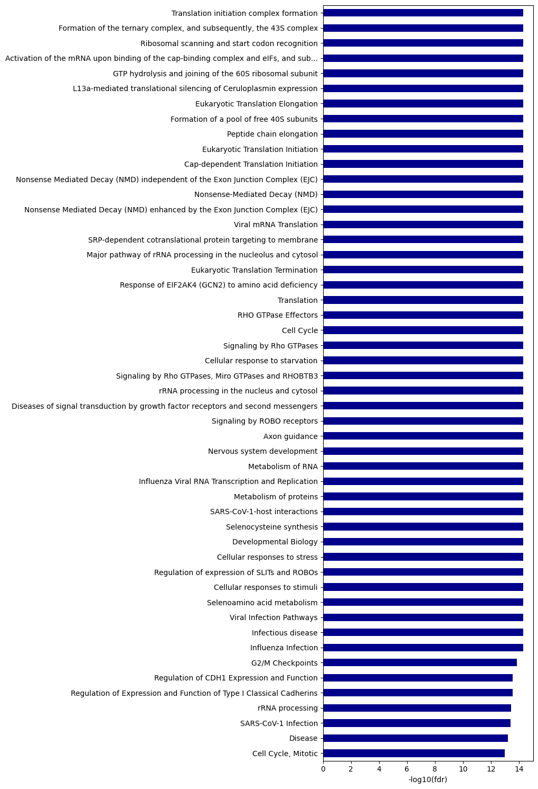

import pandas as pd
import numpy as np
from katlas.data import *
from katlas.pssm import *
from katlas.utils import *
from katlas.plot import *
from katlas.feature import *
from matplotlib import pyplot as plt
import seaborn as sns
import math
from sklearn.cluster import KMeans
from pathlib import Path
from tqdm import tqdmPlot heatmap and logo of CDDM
Setup
df = Data.get_ks_dataset()CPU times: user 737 ms, sys: 289 ms, total: 1.03 s
Wall time: 6.98 sdf.head()| kin_sub_site | kinase_uniprot | substrate_uniprot | site | source | substrate_genes | substrate_phosphoseq | position | site_seq | sub_site | ... | kinase_on_tree | kinase_genes | kinase_protein | kinase_group | kinase_family | kinase_subfamily | kinase_pspa_big | kinase_pspa_small | kinase_coral_ID | num_kin | |
|---|---|---|---|---|---|---|---|---|---|---|---|---|---|---|---|---|---|---|---|---|---|
| 0 | O00141_A4FU28_S140 | O00141 | A4FU28 | S140 | Sugiyama | CTAGE9 | MEEPGATPQPYLGLVLEELGRVVAALPESMRPDENPYGFPSELVVC... | 140 | AAAEEARSLEATCEKLSRsNsELEDEILCLEKDLKEEKSKH | A4FU28_S140 | ... | 1 | SGK1 SGK | SGK1 | AGC | SGK | SGK | Basophilic | Akt/rock | SGK1 | 22 |
| 1 | O00141_O00141_S252 | O00141 | O00141 | S252 | Sugiyama | SGK1 SGK | MTVKTEAAKGTLTYSRMRGMVAILIAFMKQRRMGLNDFIQKIANNS... | 252 | SQGHIVLTDFGLCKENIEHNsTtstFCGtPEyLAPEVLHKQ | O00141_S252 | ... | 1 | SGK1 SGK | SGK1 | AGC | SGK | SGK | Basophilic | Akt/rock | SGK1 | 1 |
| 2 | O00141_O00141_S255 | O00141 | O00141 | S255 | Sugiyama | SGK1 SGK | MTVKTEAAKGTLTYSRMRGMVAILIAFMKQRRMGLNDFIQKIANNS... | 255 | HIVLTDFGLCKENIEHNsTtstFCGtPEyLAPEVLHKQPYD | O00141_S255 | ... | 1 | SGK1 SGK | SGK1 | AGC | SGK | SGK | Basophilic | Akt/rock | SGK1 | 1 |
| 3 | O00141_O00141_S397 | O00141 | O00141 | S397 | Sugiyama | SGK1 SGK | MTVKTEAAKGTLTYSRMRGMVAILIAFMKQRRMGLNDFIQKIANNS... | 397 | sGPNDLRHFDPEFTEEPVPNsIGKsPDsVLVTAsVKEAAEA | O00141_S397 | ... | 1 | SGK1 SGK | SGK1 | AGC | SGK | SGK | Basophilic | Akt/rock | SGK1 | 1 |
| 4 | O00141_O00141_S404 | O00141 | O00141 | S404 | Sugiyama | SGK1 SGK | MTVKTEAAKGTLTYSRMRGMVAILIAFMKQRRMGLNDFIQKIANNS... | 404 | HFDPEFTEEPVPNsIGKsPDsVLVTAsVKEAAEAFLGFsYA | O00141_S404 | ... | 1 | SGK1 SGK | SGK1 | AGC | SGK | SGK | Basophilic | Akt/rock | SGK1 | 1 |
5 rows × 21 columns
df.shape(187066, 21)logo heatmap
df['kinase_uniprot_gene'] = df['kinase_uniprot']+'_'+df['kinase_genes'].str.split(' ').str[0]
cnt = df.kinase_uniprot_gene.value_counts()# cnt = df.kinase_coral_ID.value_counts()def convert_source(x):
if x == "Sugiyama":
return x
elif 'Sugiyama' in x and '|' in x:
return 'Both'
elif 'Sugiyama' not in x:
return 'Non-Sugiyama'df['source_combine'] = df.source.apply(convert_source)def plot_hist_num_kin(df_k):
"Plot histogram of num kin grouped by source_combine."
g = sns.displot(
df_k,
x="num_kin",
col="source_combine",
bins=100,
col_wrap=1,
height=2.0,
aspect=4,
facet_kws={'sharex': False, 'sharey': False}
)
g.set_axis_labels("Number of Kinases per Site", "Count")
# Customize titles
for ax, source in zip(g.axes.flatten(), g.col_names):
count = df_k[df_k['source_combine'] == source].shape[0]
ax.set_title(f"{source} (n={count:,})")
g.figure.suptitle("Histogram of # Kinases per Substrate Site")
# Adjust layout to make room for suptitle
plt.tight_layout()def plot_cnt_cddm(df_k):
"Plot source combine counts via bar graph."
source_cnt = df_k.source_combine.value_counts()
plot_cnt(source_cnt)
plt.title('# Substrate Sites per Source',pad=20)# plot_cnt_cddm(df_k)def plot_cnt_acceptor(df_k):
"Plot site type via bar graph."
acceptor_cnt = df_k.acceptor.value_counts()
plot_cnt(acceptor_cnt)
plt.title('# Substrate Sites per Phospho-Acceptor Type',pad=20)# plot_cnt_acceptor(df_k)# set_sns()# onehot = onehot_encode(df_k.site_seq)def filter_range_columns(df,low=-10,high=10):
positions = df.columns.str[:-1].astype(int)
mask = (positions >= low) & (positions <= high)
return df.loc[:,mask]# positions = onehot.columns.str[:-1].astype(int)
# mask = (positions >= -10) & (positions <= 10)
# onehot = onehot.loc[:,mask]
# df_k['cluster'] = kmeans(onehot,n=10,seed=42)
# pssms = get_cluster_pssms(df_k,'cluster',valid_thr=0.5)
# kmeans_cnt = df_k.cluster.value_counts()# plot_logos(pssms,kmeans_cnt)def get_onehot_add_cluster(df_k,n=10):
df_k = df_k.copy()
onehot = onehot_encode(df_k.site_seq)
onehot_10 = filter_range_columns(onehot)
df_k['Cluster'] = kmeans(onehot_10,n=n,seed=42)
df_k = df_k.reset_index(drop=True)
return df_k,onehot_10# df_k,onehot_10 = get_onehot_add_cluster(df_k,n=10)def get_kmeans_logos(df_k,cnt_thr=10):
pssms = get_cluster_pssms(df_k,'Cluster',valid_thr=0) # remove valid thr
kmeans_cnt = df_k['Cluster'].value_counts()
# filter cluster with >=10 counts
valid_clusters = kmeans_cnt[kmeans_cnt >= cnt_thr].index
filtered_pssms = pssms.loc[valid_clusters]
if not filtered_pssms.empty: plot_logos(filtered_pssms,kmeans_cnt)# df_k,onehot_10 = get_onehot_add_cluster(df_k,n=10)
# get_kmeans_logos(df_k)def plot_onehot(onehot_10,hue):
plot_cluster(onehot_10,'pca',seed=42,complexity=30,hue=hue,legend=True,s=8)
plt.title(f'PCA of One-Hot Encoded\n Substrate Site Sequences (n={len(onehot_10):,})')# df_k,onehot_10 = get_onehot_add_cluster(df_k,n=10)
# plot_onehot(onehot_10,df_k['Cluster'])
# get_kmeans_logos(df_k)# plot_cluster(onehot_10,'pca',seed=42,complexity=30,hue=df_k.cluster,legend=True,s=8)
# plt.title('PCA of One-Hot Encoded Sequences (-10 to +10')# plot_logo_heatmap(pssm_df,title=f'{k} (n={len(df_k):,})',figsize=(17,10))# for site_type in ['S','T','Y']:
# df_sty = df[df.kinase_uniprot_gene.upper()==site_type].copy()
# pssm_sty = get_prob(df_sty,'site_seq')
# plot_logo_heatmap(pssm_sty,title=f'{site_type} sites (n={len(df_sty):,})',figsize=(17,10))
# save_show()# pssm_LO = get_pssm_LO(pssm_sty,'S')# plot_logo_raw(pssm_LO,ytitle="Log-Odds Score (bits)")# plot_logo_heatmap_enrich(pssm_LO)# import logomaker# for site_type in ['S','T','Y']:
# df_sty = df_k[df_k.acceptor.str.upper()==site_type].copy()
# pssm_sty = get_prob(df_sty,'site_seq')
# plot_logo_heatmap(pssm_sty,title=f'{site_type} sites (n={len(df_sty):,})',figsize=(17,10))
# save_show()
# breakIterate
df['acceptor']=df.site.str[0]SHOW=Falsefilter_cnt = cnt[cnt>=40]list(filter_cnt.index).index('O43353_RIPK2')301for k in filter_cnt.index[235:]: breakk'P41743_PRKCI'def prepare_path(path):
"""Ensure the parent directory exists and return the full file path."""
full_path = Path(path).expanduser()
full_path.parent.mkdir(parents=True, exist_ok=True)
return full_pathdef save_show(path=None, # image path, e.g., img.svg, if not None, will save, else plt.show()
show_only=False,
):
"Show plot or save path"
if show_only: plt.show()
elif path is not None:
plt.savefig(path,
bbox_inches='tight',
pad_inches=0.05,
transparent=True,
)
else: plt.show()
plt.close()import matplotlib as mpl
import matplotlib as mpl
mpl.rcParams['svg.fonttype'] = 'none' # keep text as <text>, not paths
mpl.rcParams['svg.image_inline'] = True # embed images inline (set False to link)
mpl.rcParams['svg.hashsalt'] = '' # avoid random IDs in defs
mpl.rcParams['path.simplify'] = True
mpl.rcParams['path.simplify_threshold'] = 0.01import gcfilter_cnt = cnt[cnt>=40]
for i,k in enumerate(filter_cnt.index[235:]):
# for k in ['P00519_ABL1']:
df_k = df[df.kinase_uniprot_gene==k].copy()
# df_k = df_k[df_k.num_kin>10]
# Freq PSSM
pssm_df = get_prob(df_k,'site_seq')
plot_logo_heatmap(pssm_df,title=f'{k} (n={len(df_k):,})',figsize=(17,10))
path1=prepare_path(f'fig/cddm/{k}/pssm_freq.svg')
save_show(path1,show_only=SHOW)
# Log odds PSSM
pssm_LO = get_pssm_LO(pssm_df,'STY')
plot_logo_heatmap_LO(pssm_LO,title=f'{k} (n={len(df_k):,})',figsize=(17,10))
path2=prepare_path(f'fig/cddm/{k}/pssm_LO.svg')
save_show(path2,show_only=SHOW)
# plot S, T and Y motif
sty_cnt =df_k.acceptor.value_counts()
acceptors = sty_cnt[(sty_cnt/len(df_k) > 0.08) & (sty_cnt>=10)].index # Skip this site_type if it has less than 8% or less than 10 count
for site_type in acceptors:
df_sty = df_k[df_k.acceptor.str.upper()==site_type].copy()
# freq map
pssm_sty = get_prob(df_sty,'site_seq')
plot_logo_heatmap(pssm_sty,title=f'{k}: {site_type} sites (n={len(df_sty):,})',figsize=(17,10))
path_3=prepare_path(f'fig/cddm/{k}/pssm_freq_{site_type}.svg')
save_show(path_3,show_only=SHOW)
# for log-odds
pssm_LO = get_pssm_LO(pssm_sty,site_type)
plot_logo_heatmap_LO(pssm_LO,acceptor=site_type,title=f'{k}: {site_type} sites (n={len(df_sty):,})',figsize=(17,10))
path_4=prepare_path(f'fig/cddm/{k}/pssm_LO_{site_type}.svg')
save_show(path_4,show_only=SHOW)
path5=prepare_path(f'fig/cddm/{k}/bar_acceptor.svg')
plot_cnt_acceptor(df_k)
save_show(path5,show_only=SHOW)
# count of source
path6=prepare_path(f'fig/cddm/{k}/bar_source.svg')
plot_cnt_cddm(df_k)
save_show(path6,show_only=SHOW)
# histogram of num kin
path7=prepare_path(f'fig/cddm/{k}/hist_num_kin.svg')
plot_hist_num_kin(df_k)
save_show(path7,show_only=SHOW)
# onehot of sequences
# filter out noise acceptor for stratification
df_k = df_k[df_k.acceptor.isin(acceptors)]
df_k,onehot_10 = get_onehot_add_cluster(df_k,n=10)
path8=prepare_path(f'fig/cddm/{k}/pca_onehot.svg')
plot_onehot(onehot_10,df_k.Cluster)
save_show(path8,show_only=SHOW)
path9=prepare_path(f'fig/cddm/{k}/motif_kmeans.svg')
get_kmeans_logos(df_k)
save_show(path9,show_only=SHOW)
path00=prepare_path(f'fig/cddm/{k}/df_k.parquet')
df_k.to_parquet(path00)
plt.close()
if i % 10 == 0:
gc.collect()
# break100%|██████████████████████████████████████████████████████████████████████████████████████████████| 10/10 [00:00<00:00, 73.75it/s]
100%|█████████████████████████████████████████████████████████████████████████████████████████████| 10/10 [00:00<00:00, 146.48it/s]
100%|██████████████████████████████████████████████████████████████████████████████████████████████| 10/10 [00:00<00:00, 92.02it/s]
100%|█████████████████████████████████████████████████████████████████████████████████████████████| 10/10 [00:00<00:00, 144.13it/s]
100%|█████████████████████████████████████████████████████████████████████████████████████████████| 10/10 [00:00<00:00, 106.27it/s]
100%|██████████████████████████████████████████████████████████████████████████████████████████████| 10/10 [00:00<00:00, 84.45it/s]
100%|█████████████████████████████████████████████████████████████████████████████████████████████| 10/10 [00:00<00:00, 116.55it/s]
100%|██████████████████████████████████████████████████████████████████████████████████████████████| 10/10 [00:00<00:00, 56.13it/s]
100%|██████████████████████████████████████████████████████████████████████████████████████████████| 10/10 [00:00<00:00, 83.22it/s]
100%|██████████████████████████████████████████████████████████████████████████████████████████████| 10/10 [00:00<00:00, 80.70it/s]
100%|██████████████████████████████████████████████████████████████████████████████████████████████| 10/10 [00:00<00:00, 82.79it/s]
100%|█████████████████████████████████████████████████████████████████████████████████████████████| 10/10 [00:00<00:00, 218.11it/s]
100%|██████████████████████████████████████████████████████████████████████████████████████████████| 10/10 [00:00<00:00, 76.83it/s]
100%|██████████████████████████████████████████████████████████████████████████████████████████████| 10/10 [00:00<00:00, 95.90it/s]
100%|██████████████████████████████████████████████████████████████████████████████████████████████| 10/10 [00:00<00:00, 70.55it/s]
100%|██████████████████████████████████████████████████████████████████████████████████████████████| 10/10 [00:00<00:00, 67.97it/s]
100%|██████████████████████████████████████████████████████████████████████████████████████████████| 10/10 [00:00<00:00, 77.00it/s]
100%|██████████████████████████████████████████████████████████████████████████████████████████████| 10/10 [00:00<00:00, 98.59it/s]
100%|██████████████████████████████████████████████████████████████████████████████████████████████| 10/10 [00:00<00:00, 90.30it/s]
100%|██████████████████████████████████████████████████████████████████████████████████████████████| 10/10 [00:00<00:00, 92.44it/s]
100%|██████████████████████████████████████████████████████████████████████████████████████████████| 10/10 [00:00<00:00, 70.34it/s]
100%|█████████████████████████████████████████████████████████████████████████████████████████████| 10/10 [00:00<00:00, 116.14it/s]
100%|██████████████████████████████████████████████████████████████████████████████████████████████| 10/10 [00:00<00:00, 70.21it/s]
100%|██████████████████████████████████████████████████████████████████████████████████████████████| 10/10 [00:00<00:00, 77.78it/s]
100%|██████████████████████████████████████████████████████████████████████████████████████████████| 10/10 [00:00<00:00, 87.13it/s]
100%|█████████████████████████████████████████████████████████████████████████████████████████████| 10/10 [00:00<00:00, 151.65it/s]
100%|█████████████████████████████████████████████████████████████████████████████████████████████| 10/10 [00:00<00:00, 111.28it/s]
100%|█████████████████████████████████████████████████████████████████████████████████████████████| 10/10 [00:00<00:00, 220.84it/s]
100%|██████████████████████████████████████████████████████████████████████████████████████████████| 10/10 [00:00<00:00, 76.75it/s]
100%|██████████████████████████████████████████████████████████████████████████████████████████████| 10/10 [00:00<00:00, 72.21it/s]
100%|██████████████████████████████████████████████████████████████████████████████████████████████| 10/10 [00:00<00:00, 72.33it/s]
100%|█████████████████████████████████████████████████████████████████████████████████████████████| 10/10 [00:00<00:00, 123.73it/s]
100%|██████████████████████████████████████████████████████████████████████████████████████████████| 10/10 [00:00<00:00, 93.41it/s]
100%|██████████████████████████████████████████████████████████████████████████████████████████████| 10/10 [00:00<00:00, 71.76it/s]
100%|██████████████████████████████████████████████████████████████████████████████████████████████| 10/10 [00:00<00:00, 78.07it/s]
100%|█████████████████████████████████████████████████████████████████████████████████████████████| 10/10 [00:00<00:00, 129.75it/s]
100%|██████████████████████████████████████████████████████████████████████████████████████████████| 10/10 [00:00<00:00, 79.42it/s]
100%|██████████████████████████████████████████████████████████████████████████████████████████████| 10/10 [00:00<00:00, 76.79it/s]
100%|█████████████████████████████████████████████████████████████████████████████████████████████| 10/10 [00:00<00:00, 129.33it/s]
100%|█████████████████████████████████████████████████████████████████████████████████████████████| 10/10 [00:00<00:00, 128.24it/s]
100%|█████████████████████████████████████████████████████████████████████████████████████████████| 10/10 [00:00<00:00, 132.44it/s]
100%|█████████████████████████████████████████████████████████████████████████████████████████████| 10/10 [00:00<00:00, 109.60it/s]
100%|█████████████████████████████████████████████████████████████████████████████████████████████| 10/10 [00:00<00:00, 133.85it/s]
100%|██████████████████████████████████████████████████████████████████████████████████████████████| 10/10 [00:00<00:00, 84.67it/s]
100%|█████████████████████████████████████████████████████████████████████████████████████████████| 10/10 [00:00<00:00, 102.86it/s]
100%|█████████████████████████████████████████████████████████████████████████████████████████████| 10/10 [00:00<00:00, 124.24it/s]
100%|█████████████████████████████████████████████████████████████████████████████████████████████| 10/10 [00:00<00:00, 224.12it/s]
100%|█████████████████████████████████████████████████████████████████████████████████████████████| 10/10 [00:00<00:00, 145.26it/s]
100%|██████████████████████████████████████████████████████████████████████████████████████████████| 10/10 [00:00<00:00, 90.85it/s]
100%|█████████████████████████████████████████████████████████████████████████████████████████████| 10/10 [00:00<00:00, 210.07it/s]
100%|█████████████████████████████████████████████████████████████████████████████████████████████| 10/10 [00:00<00:00, 162.78it/s]
100%|█████████████████████████████████████████████████████████████████████████████████████████████| 10/10 [00:00<00:00, 111.04it/s]
100%|█████████████████████████████████████████████████████████████████████████████████████████████| 10/10 [00:00<00:00, 133.06it/s]
100%|█████████████████████████████████████████████████████████████████████████████████████████████| 10/10 [00:00<00:00, 162.31it/s]
100%|█████████████████████████████████████████████████████████████████████████████████████████████| 10/10 [00:00<00:00, 232.12it/s]
100%|█████████████████████████████████████████████████████████████████████████████████████████████| 10/10 [00:00<00:00, 182.80it/s]
100%|█████████████████████████████████████████████████████████████████████████████████████████████| 10/10 [00:00<00:00, 228.90it/s]
100%|█████████████████████████████████████████████████████████████████████████████████████████████| 10/10 [00:00<00:00, 345.97it/s]
100%|█████████████████████████████████████████████████████████████████████████████████████████████| 10/10 [00:00<00:00, 138.72it/s]
100%|█████████████████████████████████████████████████████████████████████████████████████████████| 10/10 [00:00<00:00, 134.44it/s]
100%|█████████████████████████████████████████████████████████████████████████████████████████████| 10/10 [00:00<00:00, 162.07it/s]
100%|█████████████████████████████████████████████████████████████████████████████████████████████| 10/10 [00:00<00:00, 220.88it/s]
100%|█████████████████████████████████████████████████████████████████████████████████████████████| 10/10 [00:00<00:00, 297.18it/s]
100%|█████████████████████████████████████████████████████████████████████████████████████████████| 10/10 [00:00<00:00, 217.93it/s]
100%|█████████████████████████████████████████████████████████████████████████████████████████████| 10/10 [00:00<00:00, 330.48it/s]
100%|█████████████████████████████████████████████████████████████████████████████████████████████| 10/10 [00:00<00:00, 330.39it/s]
100%|█████████████████████████████████████████████████████████████████████████████████████████████| 10/10 [00:00<00:00, 227.04it/s]
100%|█████████████████████████████████████████████████████████████████████████████████████████████| 10/10 [00:00<00:00, 593.80it/s]
100%|█████████████████████████████████████████████████████████████████████████████████████████████| 10/10 [00:00<00:00, 205.43it/s]
100%|█████████████████████████████████████████████████████████████████████████████████████████████| 10/10 [00:00<00:00, 237.42it/s]
100%|█████████████████████████████████████████████████████████████████████████████████████████████| 10/10 [00:00<00:00, 235.05it/s]
100%|█████████████████████████████████████████████████████████████████████████████████████████████| 10/10 [00:00<00:00, 328.17it/s]
100%|█████████████████████████████████████████████████████████████████████████████████████████████| 10/10 [00:00<00:00, 606.48it/s]
100%|█████████████████████████████████████████████████████████████████████████████████████████████| 10/10 [00:00<00:00, 332.83it/s]
100%|█████████████████████████████████████████████████████████████████████████████████████████████| 10/10 [00:00<00:00, 330.93it/s]
100%|█████████████████████████████████████████████████████████████████████████████████████████████| 10/10 [00:00<00:00, 234.44it/s]
100%|█████████████████████████████████████████████████████████████████████████████████████████████| 10/10 [00:00<00:00, 226.36it/s]
100%|█████████████████████████████████████████████████████████████████████████████████████████████| 10/10 [00:00<00:00, 632.95it/s]
100%|█████████████████████████████████████████████████████████████████████████████████████████████| 10/10 [00:00<00:00, 609.24it/s]
100%|█████████████████████████████████████████████████████████████████████████████████████████████| 10/10 [00:00<00:00, 641.18it/s]
100%|██████████████████████████████████████████████████████████████████████████████████████████| 10/10 [00:00<00:00, 168445.94it/s]
100%|█████████████████████████████████████████████████████████████████████████████████████████████| 10/10 [00:00<00:00, 609.52it/s]
100%|█████████████████████████████████████████████████████████████████████████████████████████████| 10/10 [00:00<00:00, 649.26it/s]
100%|█████████████████████████████████████████████████████████████████████████████████████████████| 10/10 [00:00<00:00, 662.40it/s]
100%|█████████████████████████████████████████████████████████████████████████████████████████████| 10/10 [00:00<00:00, 651.09it/s]
100%|█████████████████████████████████████████████████████████████████████████████████████████████| 10/10 [00:00<00:00, 487.47it/s]
100%|██████████████████████████████████████████████████████████████████████████████████████████| 10/10 [00:00<00:00, 143640.55it/s]
100%|██████████████████████████████████████████████████████████████████████████████████████████| 10/10 [00:00<00:00, 103819.41it/s]
100%|█████████████████████████████████████████████████████████████████████████████████████████████| 10/10 [00:00<00:00, 576.35it/s]
100%|███████████████████████████████████████████████████████████████████████████████████████████| 10/10 [00:00<00:00, 41651.48it/s]
100%|█████████████████████████████████████████████████████████████████████████████████████████████| 10/10 [00:00<00:00, 576.70it/s]
100%|██████████████████████████████████████████████████████████████████████████████████████████| 10/10 [00:00<00:00, 130257.89it/s]
100%|██████████████████████████████████████████████████████████████████████████████████████████| 10/10 [00:00<00:00, 133576.56it/s]
100%|██████████████████████████████████████████████████████████████████████████████████████████| 10/10 [00:00<00:00, 107271.20it/s]
100%|█████████████████████████████████████████████████████████████████████████████████████████████| 10/10 [00:00<00:00, 326.52it/s]
100%|███████████████████████████████████████████████████████████████████████████████████████████| 10/10 [00:00<00:00, 79588.31it/s]
100%|██████████████████████████████████████████████████████████████████████████████████████████| 10/10 [00:00<00:00, 132731.14it/s]
100%|██████████████████████████████████████████████████████████████████████████████████████████| 10/10 [00:00<00:00, 144134.16it/s]
100%|██████████████████████████████████████████████████████████████████████████████████████████| 10/10 [00:00<00:00, 104077.02it/s]
100%|███████████████████████████████████████████████████████████████████████████████████████████| 10/10 [00:00<00:00, 93414.34it/s]genes = set(df_k.substrate_genes.str.split(' ').str[0])path_ref = pd.read_excel('raw/idmapping_kinase_info_2025_05_27.xlsx')k'P00519_ABL1'path_ref['uniprot_gene'] = path_ref.uniprot+'_'+path_ref['Gene Names (primary)']idx_path = path_ref[path_ref.uniprot_gene==k].Reactome.str.split(';').iloc[0]path_df_raw| stId | dbId | name | llp | inDisease | species.dbId | species.taxId | species.name | entities.resource | entities.total | entities.found | entities.ratio | entities.pValue | entities.fdr | entities.exp | reactions.resource | reactions.total | reactions.found | reactions.ratio | |
|---|---|---|---|---|---|---|---|---|---|---|---|---|---|---|---|---|---|---|---|
| 0 | R-HSA-72649 | 72649 | Translation initiation complex formation | True | False | 48887 | 9606 | Homo sapiens | TOTAL | 62 | 39 | 0.003861 | 1.110223e-16 | 4.884981e-15 | [] | TOTAL | 2 | 2 | 0.000129 |
| 1 | R-HSA-72695 | 72695 | Formation of the ternary complex, and subseque... | True | False | 48887 | 9606 | Homo sapiens | TOTAL | 54 | 33 | 0.003362 | 1.110223e-16 | 4.884981e-15 | [] | TOTAL | 3 | 3 | 0.000193 |
| 2 | R-HSA-72702 | 72702 | Ribosomal scanning and start codon recognition | True | False | 48887 | 9606 | Homo sapiens | TOTAL | 64 | 39 | 0.003985 | 1.110223e-16 | 4.884981e-15 | [] | TOTAL | 2 | 2 | 0.000129 |
| 3 | R-HSA-72662 | 72662 | Activation of the mRNA upon binding of the cap... | True | False | 48887 | 9606 | Homo sapiens | TOTAL | 66 | 39 | 0.004110 | 1.110223e-16 | 4.884981e-15 | [] | TOTAL | 6 | 6 | 0.000386 |
| 4 | R-HSA-72706 | 72706 | GTP hydrolysis and joining of the 60S ribosoma... | True | False | 48887 | 9606 | Homo sapiens | TOTAL | 120 | 66 | 0.007472 | 1.110223e-16 | 4.884981e-15 | [] | TOTAL | 3 | 3 | 0.000193 |
| ... | ... | ... | ... | ... | ... | ... | ... | ... | ... | ... | ... | ... | ... | ... | ... | ... | ... | ... | ... |
| 1754 | R-HSA-198933 | 198933 | Immunoregulatory interactions between a Lympho... | True | False | 48887 | 9606 | Homo sapiens | TOTAL | 249 | 1 | 0.015504 | 1.000000e+00 | 1.000000e+00 | [] | TOTAL | 44 | 1 | 0.002829 |
| 1755 | R-HSA-373076 | 373076 | Class A/1 (Rhodopsin-like receptors) | True | False | 48887 | 9606 | Homo sapiens | TOTAL | 415 | 2 | 0.025841 | 1.000000e+00 | 1.000000e+00 | [] | TOTAL | 187 | 3 | 0.012023 |
| 1756 | R-HSA-425407 | 425407 | SLC-mediated transmembrane transport | False | False | 48887 | 9606 | Homo sapiens | TOTAL | 424 | 2 | 0.026401 | 1.000000e+00 | 1.000000e+00 | [] | TOTAL | 200 | 2 | 0.012858 |
| 1757 | R-HSA-500792 | 500792 | GPCR ligand binding | False | False | 48887 | 9606 | Homo sapiens | TOTAL | 610 | 4 | 0.037983 | 1.000000e+00 | 1.000000e+00 | [] | TOTAL | 219 | 4 | 0.014080 |
| 1758 | R-HSA-9709957 | 9709957 | Sensory Perception | False | False | 48887 | 9606 | Homo sapiens | TOTAL | 1258 | 10 | 0.078331 | 1.000000e+00 | 1.000000e+00 | [] | TOTAL | 138 | 2 | 0.008872 |
1759 rows × 19 columns
ref_paths = path_df_raw[path_df_raw.stId.isin(idx_path)]ref_paths.name80 RUNX1 regulates transcription of genes involve...
129 RHO GTPases Activate WASPs and WAVEs
157 Recruitment and ATM-mediated phosphorylation o...
306 MLL4 and MLL3 complexes regulate expression of...
423 Factors involved in megakaryocyte development ...
424 Cyclin D associated events in G1
473 Turbulent (oscillatory, disturbed) flow shear ...
485 Regulation of actin dynamics for phagocytic cu...
526 HDR through Single Strand Annealing (SSA)
629 FCGR3A-mediated phagocytosis
662 Role of ABL in ROBO-SLIT signaling
922 Myogenesis
1193 RUNX2 regulates osteoblast differentiation
Name: name, dtype: objectidx_path['R-HSA-2029482',
'R-HSA-428890',
'R-HSA-525793',
'R-HSA-5663213',
'R-HSA-5685938',
'R-HSA-5693565',
'R-HSA-69231',
'R-HSA-8939236',
'R-HSA-8940973',
'R-HSA-9664422',
'R-HSA-983231',
'R-HSA-9841922',
'R-HSA-9860927',
'']path_df = get_reactome(genes)path_df| name | fdr | -log10_fdr | |
|---|---|---|---|
| 0 | Translation initiation complex formation | 4.884981e-15 | 14.311 |
| 1 | Formation of the ternary complex, and subseque... | 4.884981e-15 | 14.311 |
| 2 | Ribosomal scanning and start codon recognition | 4.884981e-15 | 14.311 |
| 3 | Activation of the mRNA upon binding of the cap... | 4.884981e-15 | 14.311 |
| 4 | GTP hydrolysis and joining of the 60S ribosoma... | 4.884981e-15 | 14.311 |
| ... | ... | ... | ... |
| 1754 | Immunoregulatory interactions between a Lympho... | 1.000000e+00 | 0.000 |
| 1755 | Class A/1 (Rhodopsin-like receptors) | 1.000000e+00 | 0.000 |
| 1756 | SLC-mediated transmembrane transport | 1.000000e+00 | 0.000 |
| 1757 | GPCR ligand binding | 1.000000e+00 | 0.000 |
| 1758 | Sensory Perception | 1.000000e+00 | -0.000 |
1759 rows × 3 columns
ref_paths.name.shape(13,)plot_path(path_df,top_n=50,path_list=ref_paths.name)
path_df_raw[path_df_raw.stId.isin(idx_path)]def get_reactome(gene_list,
col='entities.fdr', # column of p value or fdr (e.g., entities.pValue)
ref_list=None, # list of reactome idx
):
"Reactome pathway analysis for a given gene set; returns formated output in dataframe with additional -log10(p)"
out = get_reactome_raw(gene_list).copy()
col_rename = col.split('.')[1]
out = out[['stId','name',col]].rename(columns={col:col_rename,'stId':'ID'})
out['significant']=(out[col_rename]<=0.05).astype(int)
out[f'-log10({col_rename})'] = -np.log10(out[col_rename]).round(3)
out[f'rank']=out[col_rename].rank().astype(int)
if ref_list: out['in_ref']=out.ID.isin(ref_list).astype(int)
return outout = get_reactome(genes,ref_list=idx_path)out[out.in_ref==1]| ID | name | fdr | significant | -log10(fdr) | rank | in_ref | |
|---|---|---|---|---|---|---|---|
| 80 | R-HSA-8939236 | RUNX1 regulates transcription of genes involve... | 1.253766e-08 | 1 | 7.902 | 81 | 1 |
| 129 | R-HSA-5663213 | RHO GTPases Activate WASPs and WAVEs | 3.404711e-06 | 1 | 5.468 | 130 | 1 |
| 157 | R-HSA-5693565 | Recruitment and ATM-mediated phosphorylation o... | 1.482829e-05 | 1 | 4.829 | 156 | 1 |
| 306 | R-HSA-9841922 | MLL4 and MLL3 complexes regulate expression of... | 6.713774e-04 | 1 | 3.173 | 304 | 1 |
| 423 | R-HSA-983231 | Factors involved in megakaryocyte development ... | 4.163072e-03 | 1 | 2.381 | 424 | 1 |
| 424 | R-HSA-69231 | Cyclin D associated events in G1 | 4.191536e-03 | 1 | 2.378 | 426 | 1 |
| 473 | R-HSA-9860927 | Turbulent (oscillatory, disturbed) flow shear ... | 7.981719e-03 | 1 | 2.098 | 474 | 1 |
| 485 | R-HSA-2029482 | Regulation of actin dynamics for phagocytic cu... | 9.889877e-03 | 1 | 2.005 | 486 | 1 |
| 526 | R-HSA-5685938 | HDR through Single Strand Annealing (SSA) | 1.734879e-02 | 1 | 1.761 | 527 | 1 |
| 629 | R-HSA-9664422 | FCGR3A-mediated phagocytosis | 4.756334e-02 | 1 | 1.323 | 630 | 1 |
| 662 | R-HSA-428890 | Role of ABL in ROBO-SLIT signaling | 6.281753e-02 | 0 | 1.202 | 663 | 1 |
| 922 | R-HSA-525793 | Myogenesis | 1.742057e-01 | 0 | 0.759 | 923 | 1 |
| 1193 | R-HSA-8940973 | RUNX2 regulates osteoblast differentiation | 4.049378e-01 | 0 | 0.393 | 1194 | 1 |
out.fdr.rank()0 22.0
1 22.0
2 22.0
3 22.0
4 22.0
...
1754 1755.0
1755 1756.0
1756 1757.0
1757 1758.0
1758 1759.0
Name: fdr, Length: 1759, dtype: float64def plot_path(df,col='-log10(fdr)', top_n=10,max_label_length=80):
"Plot the bar graph of pathways from get_reactome function."
# Extract the data and reverse it
data = df.head(top_n).set_index('name')[col].iloc[::-1]
# Truncate labels if they are too long
truncated_labels = [label[:max_label_length] + '...' if len(label) > max_label_length else label for label in data.index]
data.index = truncated_labels
# Calculate the required width: base width + additional width for the longest label
base_width = 2
max_label_length = max(data.index, key=len)
additional_width = len(max_label_length) * 0.1 # Adjust scaling factor as needed
figsize = (base_width + additional_width, 3*top_n/10) # Adjust height as necessary
data.plot.barh(figsize=figsize)
plt.ylabel('')
plt.xlabel(col)
plt.tight_layout()import matplotlib.pyplot as plt
def plot_path(df, col='-log10(fdr)', top_n=10, max_label_length=80, path_list=None):
"""
Plot the bar graph of pathways from get_reactome function.
Highlights pathways in path_list with a different color (dark red).
"""
# Extract and reverse data
data = df.head(top_n).set_index('name')[col].iloc[::-1]
# Save original full names to match against path_list
full_names = data.index.tolist()
# Truncate labels if too long
truncated_labels = [label[:max_label_length] + '...' if len(label) > max_label_length else label for label in full_names]
data.index = truncated_labels
# Determine colors
if path_list is not None:
path_set = set(path_list)
colors = ['darkred' if name in path_set else 'darkblue' for name in full_names]
else:
colors = 'darkblue'
# Calculate dynamic figure width
base_width = 2
max_label = max(data.index, key=len)
additional_width = len(max_label) * 0.1
figsize = (base_width + additional_width, 3 * top_n / 10)
# Plot
ax = data.plot.barh(figsize=figsize, color=colors)
plt.ylabel('')
plt.xlabel(col)
plt.tight_layout()
return axpath_fdr = path_df_raw[path_df_raw['entities.fdr']<0.05]path_fdr| stId | dbId | name | llp | inDisease | species.dbId | species.taxId | species.name | entities.resource | entities.total | entities.found | entities.ratio | entities.pValue | entities.fdr | entities.exp | reactions.resource | reactions.total | reactions.found | reactions.ratio | |
|---|---|---|---|---|---|---|---|---|---|---|---|---|---|---|---|---|---|---|---|
| 0 | R-HSA-72649 | 72649 | Translation initiation complex formation | True | False | 48887 | 9606 | Homo sapiens | TOTAL | 62 | 39 | 0.003861 | 1.110223e-16 | 4.884981e-15 | [] | TOTAL | 2 | 2 | 0.000129 |
| 1 | R-HSA-72695 | 72695 | Formation of the ternary complex, and subseque... | True | False | 48887 | 9606 | Homo sapiens | TOTAL | 54 | 33 | 0.003362 | 1.110223e-16 | 4.884981e-15 | [] | TOTAL | 3 | 3 | 0.000193 |
| 2 | R-HSA-72702 | 72702 | Ribosomal scanning and start codon recognition | True | False | 48887 | 9606 | Homo sapiens | TOTAL | 64 | 39 | 0.003985 | 1.110223e-16 | 4.884981e-15 | [] | TOTAL | 2 | 2 | 0.000129 |
| 3 | R-HSA-72662 | 72662 | Activation of the mRNA upon binding of the cap... | True | False | 48887 | 9606 | Homo sapiens | TOTAL | 66 | 39 | 0.004110 | 1.110223e-16 | 4.884981e-15 | [] | TOTAL | 6 | 6 | 0.000386 |
| 4 | R-HSA-72706 | 72706 | GTP hydrolysis and joining of the 60S ribosoma... | True | False | 48887 | 9606 | Homo sapiens | TOTAL | 120 | 66 | 0.007472 | 1.110223e-16 | 4.884981e-15 | [] | TOTAL | 3 | 3 | 0.000193 |
| ... | ... | ... | ... | ... | ... | ... | ... | ... | ... | ... | ... | ... | ... | ... | ... | ... | ... | ... | ... |
| 631 | R-HSA-8866427 | 8866427 | VLDLR internalisation and degradation | True | False | 48887 | 9606 | Homo sapiens | TOTAL | 16 | 4 | 0.000996 | 2.450345e-02 | 4.900690e-02 | [] | TOTAL | 4 | 4 | 0.000257 |
| 632 | R-HSA-8984722 | 8984722 | Interleukin-35 Signalling | True | False | 48887 | 9606 | Homo sapiens | TOTAL | 16 | 4 | 0.000996 | 2.450345e-02 | 4.900690e-02 | [] | TOTAL | 26 | 25 | 0.001672 |
| 633 | R-HSA-1679131 | 1679131 | Trafficking and processing of endosomal TLR | True | False | 48887 | 9606 | Homo sapiens | TOTAL | 16 | 4 | 0.000996 | 2.450345e-02 | 4.900690e-02 | [] | TOTAL | 7 | 4 | 0.000450 |
| 634 | R-HSA-879415 | 879415 | Advanced glycosylation endproduct receptor sig... | True | False | 48887 | 9606 | Homo sapiens | TOTAL | 16 | 4 | 0.000996 | 2.450345e-02 | 4.900690e-02 | [] | TOTAL | 4 | 2 | 0.000257 |
| 635 | R-HSA-2173789 | 2173789 | TGF-beta receptor signaling activates SMADs | True | False | 48887 | 9606 | Homo sapiens | TOTAL | 51 | 8 | 0.003176 | 2.483726e-02 | 4.967452e-02 | [] | TOTAL | 44 | 26 | 0.002829 |
636 rows × 19 columns
plot_path??Signature: plot_path(react_out, top_n=10, max_label_length=80) Source: def plot_path(react_out, top_n=10,max_label_length=80): "Plot the bar graph of pathways from get_reactome function." # Extract the data and reverse it data = react_out.head(top_n).set_index('name')['-log10_pValue'].iloc[::-1] # Truncate labels if they are too long truncated_labels = [label[:max_label_length] + '...' if len(label) > max_label_length else label for label in data.index] data.index = truncated_labels # Calculate the required width: base width + additional width for the longest label base_width = 2 max_label_length = max(data.index, key=len) additional_width = len(max_label_length) * 0.1 # Adjust scaling factor as needed figsize = (base_width + additional_width, 3*top_n/10) # Adjust height as necessary data.plot.barh(figsize=figsize) plt.ylabel('') plt.xlabel('-log10(p)') plt.tight_layout() File: ~/katlas/katlas/utils.py Type: function
path_fdr.loc[path_fdr['entities.ratio'].sort_values(ascending=False).index]| stId | dbId | name | llp | inDisease | species.dbId | species.taxId | species.name | entities.resource | entities.total | entities.found | entities.ratio | entities.pValue | entities.fdr | entities.exp | reactions.resource | reactions.total | reactions.found | reactions.ratio | |
|---|---|---|---|---|---|---|---|---|---|---|---|---|---|---|---|---|---|---|---|
| 180 | R-HSA-162582 | 162582 | Signal Transduction | False | False | 48887 | 9606 | Homo sapiens | TOTAL | 3049 | 267 | 0.189851 | 3.562203e-06 | 3.562203e-05 | [] | TOTAL | 2584 | 1258 | 0.166131 |
| 48 | R-HSA-1643685 | 1643685 | Disease | False | True | 48887 | 9606 | Homo sapiens | TOTAL | 2851 | 299 | 0.177522 | 1.554312e-15 | 6.061818e-14 | [] | TOTAL | 2011 | 716 | 0.129292 |
| 94 | R-HSA-168256 | 168256 | Immune System | False | False | 48887 | 9606 | Homo sapiens | TOTAL | 2664 | 256 | 0.165878 | 2.664359e-09 | 5.328718e-08 | [] | TOTAL | 1733 | 791 | 0.111418 |
| 32 | R-HSA-392499 | 392499 | Metabolism of proteins | False | False | 48887 | 9606 | Homo sapiens | TOTAL | 2417 | 268 | 0.150498 | 1.110223e-16 | 4.884981e-15 | [] | TOTAL | 909 | 428 | 0.058442 |
| 188 | R-HSA-74160 | 74160 | Gene expression (Transcription) | False | False | 48887 | 9606 | Homo sapiens | TOTAL | 1990 | 186 | 0.123910 | 4.133596e-06 | 3.895872e-05 | [] | TOTAL | 1140 | 486 | 0.073293 |
| ... | ... | ... | ... | ... | ... | ... | ... | ... | ... | ... | ... | ... | ... | ... | ... | ... | ... | ... | ... |
| 443 | R-HSA-9818025 | 9818025 | NFE2L2 regulating TCA cycle genes | True | False | 48887 | 9606 | Homo sapiens | TOTAL | 7 | 4 | 0.000436 | 1.440323e-03 | 5.761294e-03 | [] | TOTAL | 4 | 4 | 0.000257 |
| 474 | R-HSA-9649913 | 9649913 | RAS GTPase cycle mutants | False | True | 48887 | 9606 | Homo sapiens | TOTAL | 4 | 3 | 0.000249 | 2.704293e-03 | 8.112878e-03 | [] | TOTAL | 2 | 2 | 0.000129 |
| 475 | R-HSA-9753510 | 9753510 | Signaling by RAS GAP mutants | True | True | 48887 | 9606 | Homo sapiens | TOTAL | 4 | 3 | 0.000249 | 2.704293e-03 | 8.112878e-03 | [] | TOTAL | 1 | 1 | 0.000064 |
| 476 | R-HSA-9753512 | 9753512 | Signaling by RAS GTPase mutants | True | True | 48887 | 9606 | Homo sapiens | TOTAL | 4 | 3 | 0.000249 | 2.704293e-03 | 8.112878e-03 | [] | TOTAL | 1 | 1 | 0.000064 |
| 610 | R-HSA-9636667 | 9636667 | Manipulation of host energy metabolism | True | True | 48887 | 9606 | Homo sapiens | TOTAL | 3 | 2 | 0.000187 | 1.804436e-02 | 4.155485e-02 | [] | TOTAL | 2 | 2 | 0.000129 |
636 rows × 19 columns
path_df = get_reactome(genes)plot_path??Signature: plot_path(react_out, top_n=10, max_label_length=80) Source: def plot_path(react_out, top_n=10,max_label_length=80): "Plot the bar graph of pathways from get_reactome function." # Extract the data and reverse it data = react_out.head(top_n).set_index('name')['-log10_pValue'].iloc[::-1] # Truncate labels if they are too long truncated_labels = [label[:max_label_length] + '...' if len(label) > max_label_length else label for label in data.index] data.index = truncated_labels # Calculate the required width: base width + additional width for the longest label base_width = 2 max_label_length = max(data.index, key=len) additional_width = len(max_label_length) * 0.1 # Adjust scaling factor as needed figsize = (base_width + additional_width, 3*top_n/10) # Adjust height as necessary data.plot.barh(figsize=figsize) plt.ylabel('') plt.xlabel('-log10(p)') plt.tight_layout() File: ~/katlas/katlas/utils.py Type: function
path_df| name | pValue | -log10_pValue | |
|---|---|---|---|
| 0 | Translation initiation complex formation | 1.110223e-16 | 15.955 |
| 1 | Formation of the ternary complex, and subseque... | 1.110223e-16 | 15.955 |
| 2 | Ribosomal scanning and start codon recognition | 1.110223e-16 | 15.955 |
| 3 | Activation of the mRNA upon binding of the cap... | 1.110223e-16 | 15.955 |
| 4 | GTP hydrolysis and joining of the 60S ribosoma... | 1.110223e-16 | 15.955 |
| ... | ... | ... | ... |
| 1754 | Immunoregulatory interactions between a Lympho... | 1.000000e+00 | 0.000 |
| 1755 | Class A/1 (Rhodopsin-like receptors) | 1.000000e+00 | 0.000 |
| 1756 | SLC-mediated transmembrane transport | 1.000000e+00 | 0.000 |
| 1757 | GPCR ligand binding | 1.000000e+00 | 0.000 |
| 1758 | Sensory Perception | 1.000000e+00 | -0.000 |
1759 rows × 3 columns
plot_path(path_df,100)
plt.title('AKT1')Text(0.5, 1.0, 'AKT1')
genesimport matplotlib.pyplot as plt
import seaborn as sns
from katlas.core import *
from katlas.plot import *
from scipy.stats import spearmanr, pearsonr
import os
from PIL import Image
from tqdm import tqdmdef plot_count(df_k,title):
# Get value counts
source_counts = df_k.source.replace({'pplus':'PP','large_scale':'LS'}).value_counts()
plt.figure(figsize=(7,1))
source_counts.plot(kind='barh', stacked=True, color=['darkred', 'darkblue'])
# Annotate with the actual values
for index, value in enumerate(source_counts):
plt.text(value, index, str(value),fontsize=10,rotation=-90, va='center')
plt.xlabel('Count')
plt.title(title)sns.set(rc={"figure.dpi":200, 'savefig.dpi':200})
sns.set_context('notebook')
sns.set_style("ticks")Load data
df = Data.get_ks_dataset()
df['SUB'] = df.substrate.str.upper()info = Data.get_kinase_info().query('pseudo=="0"')# It only contains kinase on the tree
cnt = df.kinase_paper.value_counts()ST = info[info.group!="TK"].kinasedf[df.kinase_paper.isin(ST)].kinase_paper.value_counts()[10:20]NEK6 950
PLK1 943
CK2A1 919
P38D 907
DYRK2 907
HGK 902
TTBK1 896
MST3 890
MST1 884
IKKE 880
Name: kinase_paper, dtype: int64cnt = cnt[cnt>100]Generate example figures
def plot_heatmap2(matrix, title, figsize=(6,10), label_size=20):
plt.figure(figsize=figsize)
sns.heatmap(matrix, cmap='binary', annot=False,cbar=False)
plt.title(title,fontsize=label_size)
# Set the font size for the tick labels
plt.xticks(fontsize=label_size)
plt.yticks(fontsize=label_size)
plt.xlabel('')
plt.ylabel('')kinase_list = ['SRC','ABL1','ERK2','PKACA']sns.set(rc={"figure.dpi":200, 'savefig.dpi':200})
sns.set_context('notebook')
sns.set_style("ticks")
for k in kinase_list:
df_k = df.query(f'kinase=="{k}"')
df_k = df_k.drop_duplicates(subset='SUB').reset_index()
paper,full = get_freq(df_k)
plot_heatmap2(full.drop(columns=[0]),f'{k}',figsize=(6,10))
plt.show()
plt.close()
break
# if you want to generate and save all of figures, uncomment below
# plt.savefig(f'fig/{k}.png',bbox_inches='tight', pad_inches=0.3)
# plt.close()
Generate all figures
Uncomment plt.savefig to save figures
sns.set(rc={"figure.dpi":200, 'savefig.dpi':200})
sns.set_context('notebook')
sns.set_style("ticks")
for k in tqdm(cnt.index,total=len(cnt)):
df_k = df.query(f'kinase=="{k}"')
plot_count(df_k,k)
# plt.savefig(f'fig/count/{k}.png',bbox_inches='tight', pad_inches=0.1)
plt.show() # if visualize in jupyter notebook, uncheck the savefig
plt.close()
df_k = df_k.drop_duplicates(subset='SUB').reset_index()
paper,full = get_freq(df_k)
get_logo2(full, k)
# plt.savefig(f'fig/logo/{k}.png',bbox_inches='tight', pad_inches=0.3)
plt.show()
plt.close()
plot_heatmap(full.drop(columns=[0]),f'{k} (n={len(df_k)})',figsize=(7.5,10))
# plt.savefig(f'fig/heatmap/{k}.png',bbox_inches='tight', pad_inches=0)
plt.show()
plt.close()
# break
break 0%| | 0/289 [00:00<?, ?it/s]


0%| | 0/289 [00:02<?, ?it/s]Combine figures for pdf
def combine_images_vertically(image_paths, output_path):
images = [Image.open(image_path).convert('RGBA') for image_path in image_paths]
total_width = max(image.width for image in images)
total_height = sum(image.height for image in images)
combined_image = Image.new('RGBA', (total_width, total_height))
y_offset = 0
for image in images:
combined_image.paste(image, (0, y_offset), image)
y_offset += image.height
combined_image.save(output_path)Uncomment below to run
# folders = ["fig/count", "fig/logo", "fig/heatmap"]
# for k in tqdm(cnt.index,total=len(cnt)):
# filename = f"{k}.png"
# image_paths = [os.path.join(folder, filename) for folder in folders]
# output_path = f"fig/combine/{k}.png"
# combine_images_vertically(image_paths, output_path)
# # breakGet PSSM data of CDDM
for i,k in enumerate(cnt.index):
df_k = df.query(f'kinase=="{k}"')
df_k = df_k.drop_duplicates(subset='SUB').reset_index()
paper,full = get_freq(df_k)
melt = full.drop(columns = [0]).reset_index().melt(id_vars=['aa'], value_name=k, var_name='Position')
melt['substrate']=melt['Position'].astype(str)+ melt['aa']
position_0 = full[0][['s','t','y']].reset_index().rename(columns={0:k})
position_0['substrate'] = '0'+position_0['aa']
if i ==0:
first = pd.concat([melt,position_0])[['substrate',k]].set_index('substrate')
else:
k = pd.concat([melt,position_0])[['substrate',k]].set_index('substrate')
data = pd.concat([first,k],axis=1)
first = data.copy()
# breakdata = data.T
data.index = data.index.rename('kinase')To save
# data.to_csv('supp/CDDM.csv')
# data.to_parquet('ks_main.parquet')Get specialized CDDM data for all-capital substrates
combine s,t,y to S,T,Y
# List of suffixes
suffixes = ['S', 'T', 'Y']
for suffix in suffixes:
for i in range(-7, 8): # looping from -7 to 7
if i == 0: # Skip 0
continue
upper_col = f"{i}{suffix}" # e.g., -7S
lower_col = f"{i}{suffix.lower()}" # e.g., -7s
data[upper_col] = data[upper_col] + data[lower_col]
data.drop(lower_col, axis=1,inplace=True) # Drop the lowercase column after combiningdata.columns[data.columns.str.contains('S')]Index(['-7S', '-6S', '-5S', '-4S', '-3S', '-2S', '-1S', '1S', '2S', '3S', '4S',
'5S', '6S', '7S'],
dtype='object', name='substrate')# make sure the "s" in positions other than 0 is deleted from the columns
data.columns[data.columns.str.contains('s')]Index(['0s'], dtype='object', name='substrate')# Make sure very position's sum is 1
data.loc[:,data.columns.str.contains('-7')].sum(1).sort_values()kinase
DDR2 1.0
NEK11 1.0
MSK1 1.0
TEK 1.0
NIM1 1.0
...
CAMK2G 1.0
PKG2 1.0
MELK 1.0
NEK1 1.0
TLK2 1.0
Length: 289, dtype: float64data = data.rename(columns={'0s':'0S','0t':'0T','0y':'0Y'})data.index = data.index.rename('kinase')To save
# data.to_parquet('ks_main_upper.parquet')
# data.to_csv('supp/CDDM_upper.csv')Plot other kinases (mutated, lipid kinase, isoforms)
kinases not on kinome tree
cnt_other = df.query('on_tree==0').kinase.value_counts()
cnt_other = cnt_other[cnt_other>100]others = cnt_other.index.tolist()+['LYN','ABL1','RET','FGFR3','PDGFRA','ALK',
'EGFR','KIT','MET','PKCB','BRAF','PKG1'] # BRAF is less than 100Uncheck savefig to save figures
for k in tqdm(others,total=len(others)):
df_k = df.query(f'kinase=="{k}"')
plot_count(df_k,k)
# plt.savefig(f'fig_others/count/{k.replace("/", "_")}.png',bbox_inches='tight', pad_inches=0.1)
plt.show() # if visualize in jupyter notebook, uncheck the savefig
plt.close()
df_k = df_k.drop_duplicates(subset='SUB').reset_index()
paper,full = get_freq(df_k)
get_logo2(full,k)
# plt.savefig(f'fig_others/logo/{k.replace("/", "_")}.png',bbox_inches='tight', pad_inches=0.3)
plt.show()
plt.close()
plot_heatmap(full.drop(columns=[0]),f'{k} (n={len(df_k)})',figsize=(7.5,10))
# plt.savefig(f'fig_others/heatmap/{k.replace("/", "_")}.png',bbox_inches='tight', pad_inches=0)
plt.show()
plt.close()
break 0%| | 0/36 [00:00<?, ?it/s]


0%| | 0/36 [00:01<?, ?it/s]Combine the figures for pdf
Uncomment below to run
# folders = ["fig_others/count", "fig_others/logo", "fig_others/heatmap"]
# for k in tqdm(others,total = len(others)):
# k = k.replace("/", "_")
# filename = f"{k}.png"
# image_paths = [os.path.join(folder, filename) for folder in folders]
# output_path = f"fig_others/combine/{k}.png"
# combine_images_vertically(image_paths, output_path)
# # breakGet the PSSMs of other kinases
for i,k in enumerate(others):
df_k = df.query(f'kinase=="{k}"')
df_k = df_k.drop_duplicates(subset='SUB').reset_index()
paper,full = get_freq(df_k)
melt = full.drop(columns = [0]).reset_index().melt(id_vars=['aa'], value_name=k, var_name='Position')
melt['substrate']=melt['Position'].astype(str)+ melt['aa']
position_0 = full[0][['s','t','y']].reset_index().rename(columns={0:k})
position_0['substrate'] = '0'+position_0['aa']
if i ==0:
first = pd.concat([melt,position_0])[['substrate',k]].set_index('substrate')
else:
k = pd.concat([melt,position_0])[['substrate',k]].set_index('substrate')
data = pd.concat([first,k],axis=1)
first = data.copy()data = data.T
data.index = data.index.rename('kinase')To save:
# data.to_csv('supp/CDDM_others.csv')
# data.to_parquet('ks_others.parquet')